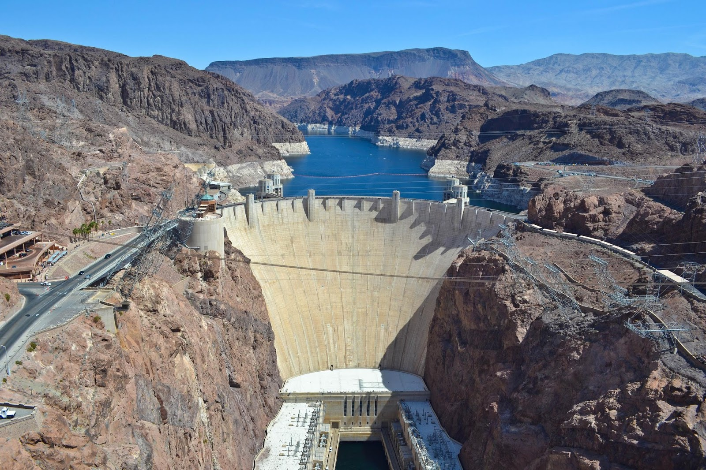

Find the work required to move a particle along a straight line from \(x=0\) to \(x=2\) with force \(F(x) = xe^{-3x}\).
A spring has a 20 cm natural length. What is the work required to stretch the spring to 30 cm long if \(k=2\) N/m?
Work of 3 Joules done in stretching a spring from its natural length to 14 cm beyond its natural length. What is the force (in Newtons) that holds the spring stretched at the same distance (14 cm)?
Example 1 - Springs
Consider the mass-spring system above.
The force required to stretch a spring a distance \(x\) is given by Hooke's Law \(F = kx\), where \(k\) represents the stiffness of the spring.
Consider a spring with \(k = 10 \) N/m.
How much force is required to keep spring stretched 5 meters?
What is the general relationship between work and force?
What is the work required to stretch a spring 5 meters from rest?
Example 2 - Chain
A 10 foot chain weighs 75 pounds and hangs from a ceiling. How much work is required to pull the chain to the top?
Sketch a picture of the situation.
\(W = \int_a^b \) ???
What is the weight of a 1 foot chunk of the chain? a 2 foot chunk?
What are the units of work in imperial units? SI?
Set up an integral representing the work required to pull the chain to the top.
Evaluate the integral to calculate the required work.
Example 3 - Piston
Consider a piston. A piston head moves up and down in a chamber filled with gas. The pressure of the gas in the chamber \(P\) is a function of the volume of the chamber \(V\).
Assume the piston chamber here is cylindrical with radius \(r\). Let \(x\) be the distance the piston moves.
What is the relationship between force, pressure, and area?
What is a formula for the force on the piston head?
Can you use this to develop another integral formula for work that only uses pressure and volume?
Let \(PV^{1.4} = k\) where \(k\) is constant be a constituative law for the gas in the chamber (like the ideal gas law).
How much work is done during the part of an engine cycle where \(V\) expands from 100 cubic inches to 800 cubic inches.
Assume \(P=160\)PSI at the start.
Example 4 - Leaking bucket
A bucket weighing 4 pounds when empty is attached to a rope of negligible mass is used to draw water from a well 30 feet deep.
Initially, the bucket contains 40 pounds of water, but as it is pulled up at a constant rate of 2 ft/sec, water leaks at a rate of 0.2 pounds/sec.
How much work is done in pulling the bucket to the top of the well?
Example 5 - Titan Games Heavy Metal
Set up integrals and calculate the work done for the three parts of the Heavy Metal challenge.
Assume the chain is 30 feet long, weighs 350 pounds, with a 100 pound weight at the end.
Assume the competitors walk up a ramp 30 feet long and 30 feet high along a 45 degree angle so there isn't excess chain to consider.
Only consider work done to move the chain and weight vertically.
Determine the work required to walk up the ramp. Calculate your answer in units of foot-pounds.
Determine the work required to pull the chain up to the top of the platform.
Determine the work required to move the mass 30 feet to the platform.
What is the total work required for the task?
The conversion between foot-pounds and calories is 1 foot-pound = 0.00032405 calories. How many calories are required to complete the Heavy Metal challenge?
Example 6 - Cylindrical tank
Calculate the work required to pump the water over the top of a filled cylindrical tank with height 2 meters and radius 1/2 meter.
The density of water is \(\delta = 1000\) kg/m\(^3\) and the acceleration due to gravity near the surface of the Earth is \(g=9.8\)m/sec\(^2\).
Some questions to consider:
What is the relationship between density, gravity, volume, and force?
What does a slice across the cylinder look like?
How far from the top of the cylinder is the slice?
Example 6a - Spherical tank
A spherical tank with radius \(R\) meters is filled with water.
The density of water is \(\delta = 1000\) kg/m\(^3\) and the acceleration due to gravity near the surface of the Earth is \(g=9.8\)m/sec\(^2\).
What is the work done pumping the water out of the top?
Some questions to consider:
Let's place the origin of our coordinate system at the origin of the sphere. Why does this make sense?
What is the equation of a circle with radius \(R\) centered at the origin?
What is the relationship between density, gravity, volume, and force?
What does a slice across the sphere look like?
How far from the top of the sphere is the slice?
Example 7 - Triangular trough
Assume the trough above is full of water and the dimensions are \(L=4, W=2, H=1\) meters.
What is the work required to pump the water over the edge?
What is the total force due to hydrostatic pressure on one end of the trough?
Example 8 - Hoover Dam

Consider the Hoover Dam. We'll approximate the dam as a trapezoid with dimensions shown above.
Assume the dam is only full to a depth of 200 meters. Answer the questions below.
What is the pressure at the base of the dam?
What is the relationship between force and pressure?
What is the pressure on an arbitrary infinitesimal thick horizontal strip of the dam? the force?
What is the total force on the dam?
Example 9 - Titanic
In 1912 the Titanic sank in the Atlantic 12,500 feet below the surface.
Assume water has force density of 62.4 pounds per cubic foot. Answer the questions below.
What is the relationship between force and pressure?
What is the relationship between density, pressure, depth, and gravity?
What is the pressure on a horizontal 100 square foot metal plate? the force?
What if the plate above is oriented vertically? Should the force be greater or less than the force on the horizontal plate?
Set up an integral representing the total force due to hydrostatic pressure on a circular porthole with diameter 2 feet in the middle of the vertical plate above.